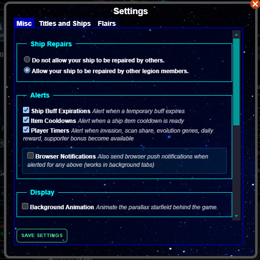

Settings Window
You can access this window from the Ship tab

This window displays:
A Miscellaneous Settings Tab
A Titles and Ships Tab
A Flairs Tab
Remember to click Save Settings at the bottom when you are done!
Misc Tab
This tab contains a variety of settings, including: background animation, alerts, and button styles. In addition, this tab contains the Tutorial.
Titles and Ships Tab
This tab allows you to select from the Titles and Designs that you've unlocked.
Flairs Tab
This tab allows you to select from Flairs that you've unlocked.
You can unlock more Designs, Titles, and Flairs by earning Medals
You can test out different Designs, Titles, and Flairs with the Fun with Designs! page.